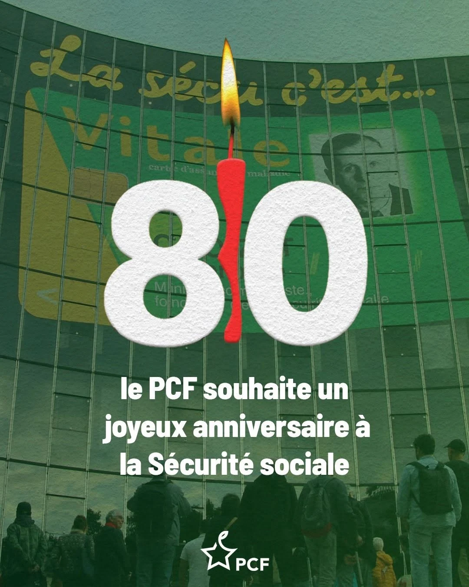

Déclaration nationale
80 ans de Sécurité sociale. Défendre cette conquête du monde du travail
Date de mise à jour indiquée par Facebook · 4 octobre 2025
Repères éditoriaux
Le PCF rappelle la création de la Sécurité sociale en 1945 et le rôle des résistants et du monde du travail. Il défend une protection solidaire, du berceau à la tombe.
Texte de la publication · PCF national
Le 4 octobre 1945 naissait la Sécurité sociale, fruit du combat des résistants et des ouvriers. Depuis 80 ans, elle protège chacun·e d’entre nous « du berceau à la tombe », selon les mots d’Ambroise Croizat, ministre communiste et fondateur de la Sécurité sociale.
Cette grande conquête ouvrière, nous la devons au Conseil national de la Résistance, aux luttes populaires et à la volonté d’un peuple qui voulait en finir avec la misère. Elle incarne une idée simple mais révolutionnaire : la mise en commun, par les travailleurs, du fruit de leur travail. Chacun cotisant en fonction de ses moyens et recevant en fonction de ses besoins.
Avec la sécu, tous peuvent compter sur chacun et chacun sur tous !
Aujourd’hui, la Sécurité sociale reste une conquête moderne, vivante et indispensable. Attaquée de toutes parts par les logiques libérales, il nous faut toujours la défendre !
Trop de nos concitoyens de parviennent plus à se soigner correctement !
👉 Pour ses 80 ans, exigeons une sécurité sociale du 21ème siècle, mieux financée, plus protectrice et solidaire, en phase avec les besoins de nos concitoyens.
Signez et à relayez largement notre pétition pour mettre fin aux dépassements d’honoraires et garantir l’égalité d’accès aux soins. Lien en commentaire.
Vive la Sécu ! Vive la solidarité !

Sources
PCF national · publication relayée par le PCF 79 · bibliothèque Facebook · AR-0002-FB-00993
À lire aussi · Les députés communistes proposent d’inscrire la Sécurité sociale dans la Constitution